|
Funcionamiento de código
MainGui.java
Librerias
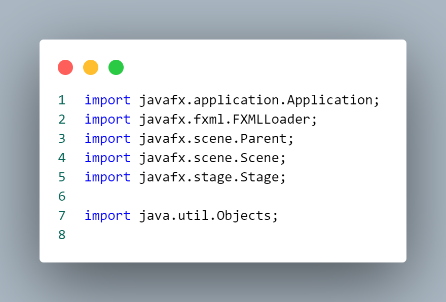
Importa las clases necesarias
para trabajar con JavaFX y otras utilidades.
Metodo MainGui
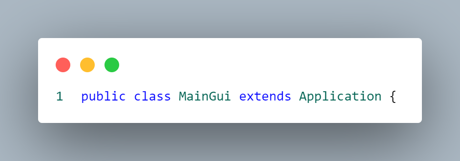
Declara una clase llamada
MainGui que extiende la clase Application,
indicando que esta clase es una aplicación
JavaFX.
Metodo voidMain
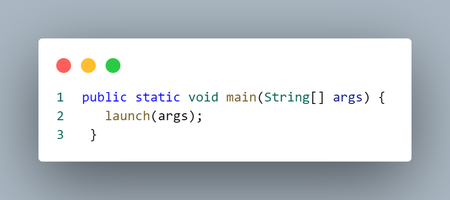
Este método es el punto de entrada
principal para la aplicación Java.
Llama al método launch, que a su vez inicia
la aplicación y llama al método start que
definiste a continuación.
Metodo voidStart
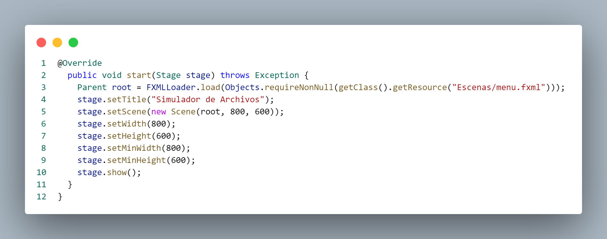
Este método se llama cuando la aplicación se inicia. Aquí está el flujo de ejecución:
Carga la interfaz gráfica desde un archivo FXML llamado "menu.fxml".
Configura el título de la ventana como "Simulador de Archivos".
Crea una escena (Scene) con el objeto root y establece su tamaño inicial en 800x600 píxeles.
Configura el tamaño mínimo de la ventana en 800x600 píxeles.
Muestra la ventana
Main.java
Clase Main
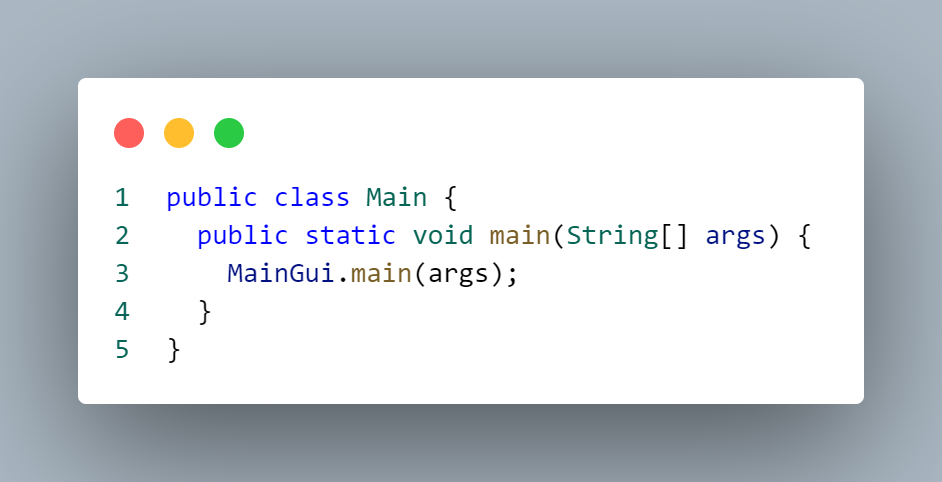
Este código sirve como un punto
de entrada alternativo a la aplicación.
En lugar de iniciar directamente desde la
clase MainGui, se inicia desde la clase Main.
La intención puede ser proporcionar un punto
de entrada más genérico o modular,
o tal vez para cumplir con algún requisito
específico de diseño o estructura del proyecto.
Controladores.java
Librerias
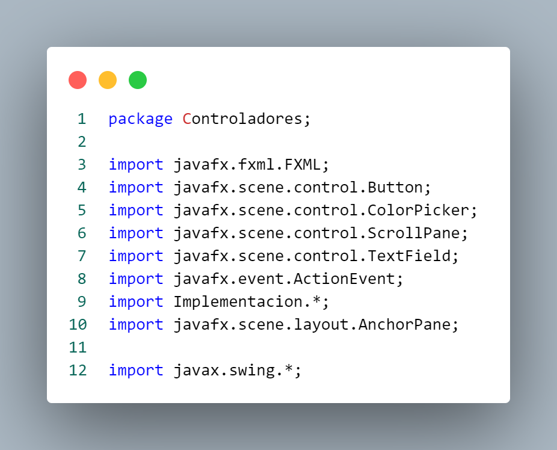
Primeramente, se declara que
la clase se encuentra en el paquete 'Controladores'
Importa diversas clases de JavaFX que son
utilizadas para la construcción de interfaces
gráficas de usuario (GUI). Aquí hay una breve
descripción de cada importación:
FXML: Proporciona anotaciones para vincular
elementos de la interfaz de usuario (definidos
en archivos FXML) a campos en controladores.
Button: Representa un botón en la interfaz gráfica.
ColorPicker: Proporciona un control para seleccionar un color.
ScrollPane: Ofrece un contenedor con barras de desplazamiento.
TextField: Representa un campo de texto.
ActionEvent: Se utiliza para manejar eventos de acción.
AnchorPane: Es un contenedor que utiliza coordenadas
ancladas para posicionar sus hijos.
Importa la clase JOptionPane del paquete javax.swing,
que es parte de la biblioteca Swing de Java y se utiliza
para mostrar cuadros de diálogo y mensajes en aplicaciones
de escritorio.
Clase contolMenu
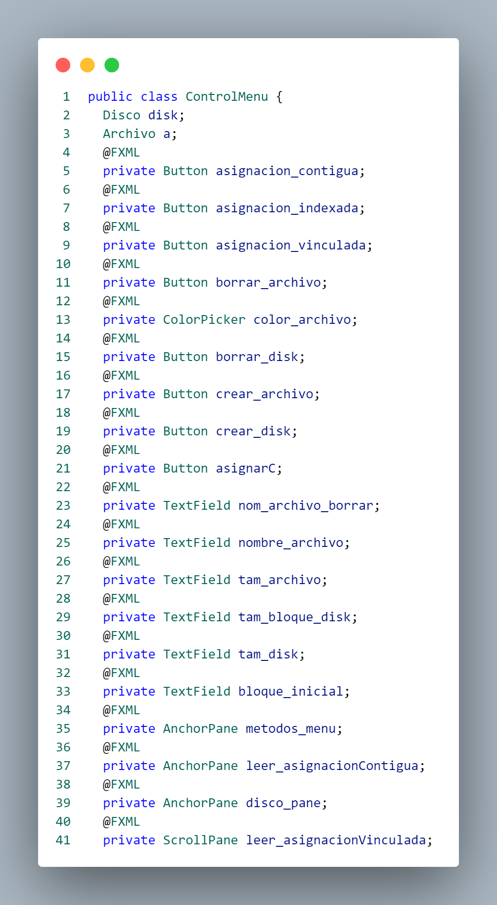
La clase `ControlMenu` en este
código parece ser un controlador de interfaz
gráfica que interactúa con elementos de la
interfaz de usuario (UI) en una aplicación JavaFX.
La clase `ControlMenu` controla la lógica y
las interacciones de la interfaz gráfica de
una aplicación que involucra operaciones en
discos y archivos. Los elementos de la interfaz
gráfica están anotados con @FXML, indicando que
serán inyectados por el cargador FXML durante
la construcción de la interfaz.
Metodo crearDisk
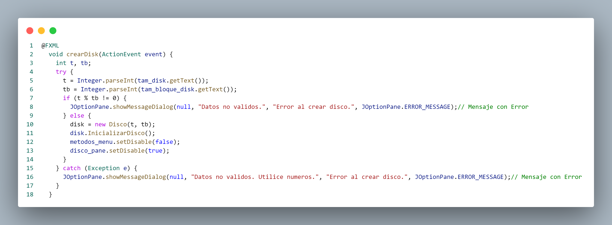
El método crearDisk es un
controlador de evento asociado a la acción
de crear un disco en una interfaz gráfica
JavaFX. Al ser activado, recopila el tamaño
total del disco y el tamaño del bloque desde
campos de texto en la interfaz, valida que
el tamaño total sea divisible por el tamaño
del bloque y, si es así, crea un objeto Disco
con los valores proporcionados.
Luego, inicializa el disco y realiza ajustes
en la interfaz, habilitando ciertos elementos
y deshabilitando otros. Si se ingresan datos
no válidos o si ocurre alguna excepción,
se muestra un mensaje de error.
Metodo crearArchivo
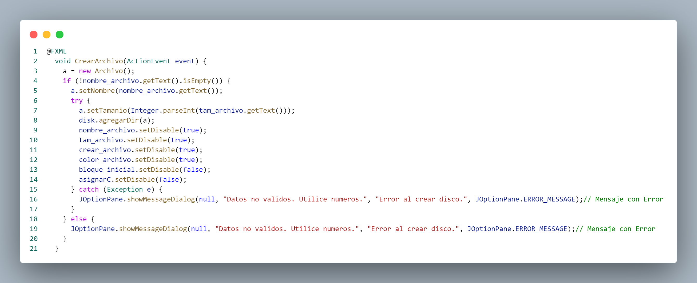
El método `CrearArchivo` en
este código JavaFX es un controlador de
eventos asociado a la acción de crear un
archivo en la interfaz gráfica. En primer
lugar, instancia un nuevo objeto de la
clase `Archivo` y verifica si el campo que
contiene el nombre del archivo no está vacío.
Si el nombre es proporcionado, se configura
en el objeto de archivo recién creado.
A continuación, intenta convertir el texto
ingresado en el campo de tamaño del archivo
a un valor numérico. Si la conversión es exitosa,
el archivo se agrega al disco y se realizan
ajustes en la interfaz, como la desactivación
de ciertos elementos y la activación de otros
relacionados con la asignación de bloques. Sin
embargo, si hay algún problema durante la
conversión o cualquier otra excepción, se muestra
un mensaje de error indicando que los datos
ingresados no son válidos. En el caso de que el
vacío desde el principio, también se muestra un
mensaje de error.
Metodo AsignacionContigua
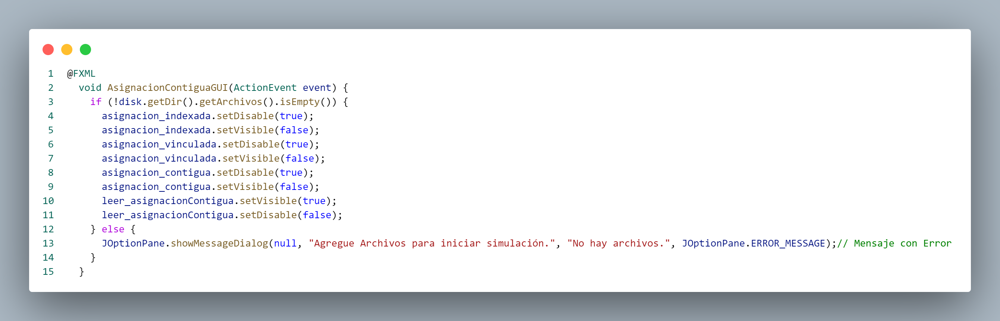
El método `AsignacionContiguaGUI`
en la aplicación JavaFX actúa como un controlador
de eventos asociado a la selección de asignación
contigua en la interfaz gráfica. Primero, verifica
si hay archivos presentes en el disco. Si la lista
de archivos no está vacía, realiza ajustes en la
interfaz desactivando y ocultando los botones
relacionados con asignaciones indexadas y vinculadas,
así como el botón de asignación contigua. Además,
habilita y hace visible un área destinada a
mostrar información relacionada con la asignación
contigua, mientras desactiva el botón de asi
gnación contigua para evitar acciones adicionales
durante la simulación. En caso de que no hay
a archivos en el disco, muestra un mensaje de
error indicando que es necesario agregar archivo
s para iniciar la simulación.
Metodo asignarC
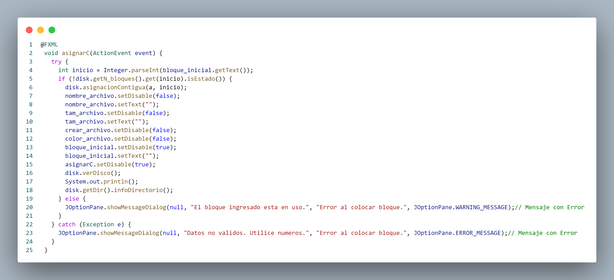
El método `asignarC` en la
aplicación JavaFX funciona como un controlador
de eventos asociado a la acción de asignar
bloques contiguos a un archivo en el disco.
Primero, intenta convertir el valor ingresado
en el campo de bloque inicial a un número
entero y verifica si ese bloque no está
actualmente en uso. Si el bloque está disponible,
realiza la asignación contigua llamando al
método correspondiente en el objeto `disk`.
Luego, actualiza la interfaz, habilitando
la entrada de datos para el nombre y tamaño
de nuevos archivos, desactivando la asignación de
bloques contiguos y mostrando visualmente el
estado actual del disco y la información del
directorio de archivos. Si el bloque inicial
está en uso, se emite una advertencia, y cualquier
excepción relacionada con la conversión de datos o
la asignación de bloques se maneja, mostrando
un mensaje de error.
Metodo BorrarArchivo
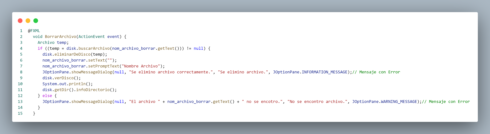
El método `BorrarArchivo` en la
aplicación JavaFX funciona como un controlador
de eventos asociado a la acción de eliminar
un archivo del disco. En primer lugar, busca
el archivo en el disco utilizando el nombre
proporcionado en el campo `nom_archivo_borrar`.
Si el archivo se encuentra, lo elimina del
disco, actualiza la interfaz para reflejar
los cambios y muestra un mensaje informativo
indicando que la operación se realizó correctamente.
En caso de que no se encuentre el archivo,
emite una advertencia indicando que el archivo con
el nombre especificado no fue hallado.
Metodo eliminarDisco
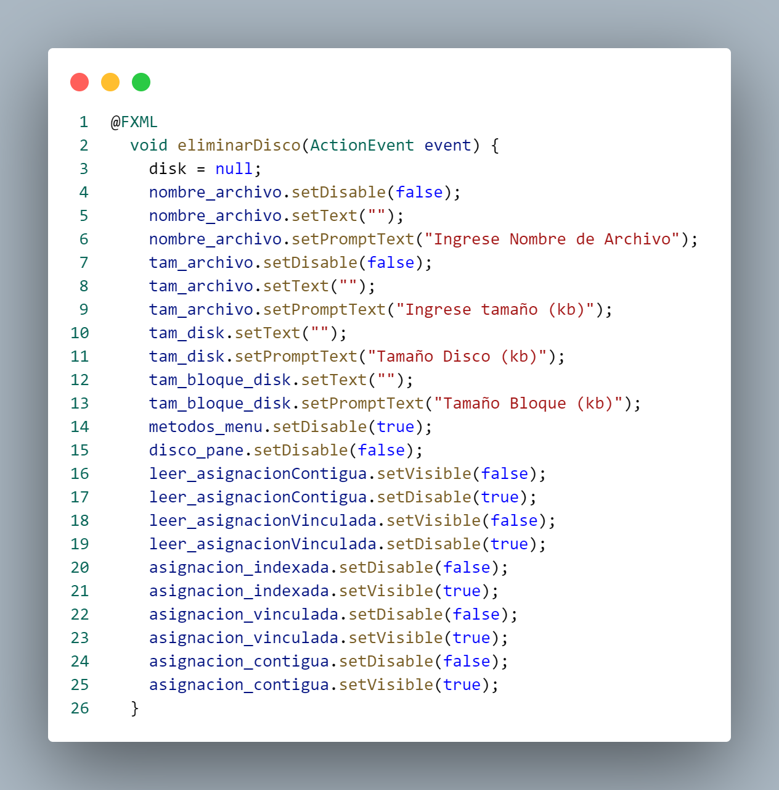
El método `eliminarDisco` en la
aplicación JavaFX cumple la función de reiniciar
o eliminar el objeto que representa un disco
(`disk`). Primero, asigna `null` al objeto del disco,
efectivamente eliminándolo. Luego, restaura los campos
de entrada para el nombre y tamaño de archivos,
así como los campos relacionados con el tamaño
del disco y del bloque del disco,permitiendo
que el usuario ingrese nuevos datos. Además,
gestiona la interfaz gráfica al desactivar ciertos
elementos y activar otros, indicando un estado
inicial después de la eliminación o reinicio
del disco. También oculta áreas específicas de
la interfaz relacionadascon asignaciones de
bloques y vuelve a habilitar las opciones de
asignación de bloques, proporcionando así
un entorno limpio para nuevas operaciones en
la aplicación.
Metodo Asignacion Vinculada
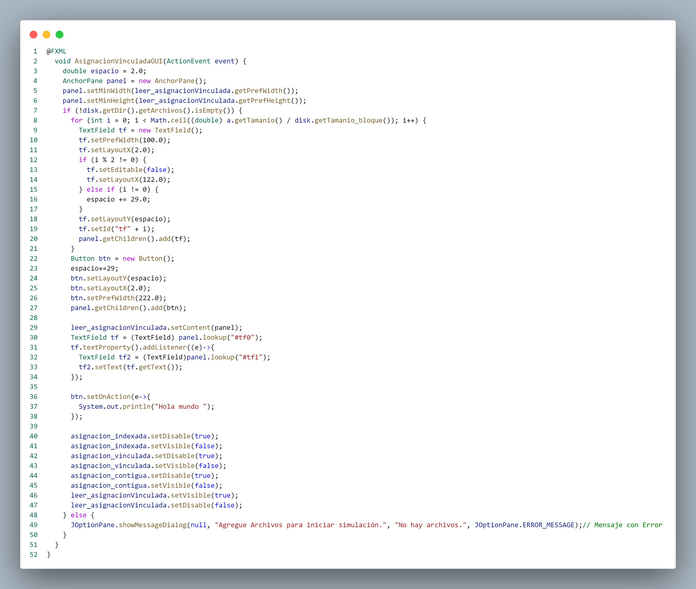
El método `AsignacionVinculadaGUI` en
la aplicación JavaFX se encarga de gestionar la interfaz
gráfica para la asignación de bloques de manera vinculada
a un archivo. Primero, inicializa un panel y establece su
tamaño mínimo. Luego, verifica la existencia de archivos
en el disco y, si están presentes, genera dinámicamente
campos de texto en el panel, representando bloques
en la asignación vinculada. Cada campo tiene propiedades
específicas según su posición, como la capacidad de edición
basada en la paridad del índice. Además, se crea un botón
y se añaden acciones, como la actualización de un campo de
texto en respuesta a cambios en otro. El botón también
imprime "Hola mundo" en la consola cuando se presiona. La
interfaz se adapta visualmente al desactivar y ocultar
botones relacionados con otras asignaciones y mostrar el
área de asignación vinculada. En caso de que no haya
archivos en el disco, se presenta un mensaje de
error indicando que es necesario agregar archivos para
iniciar la simulación.
|